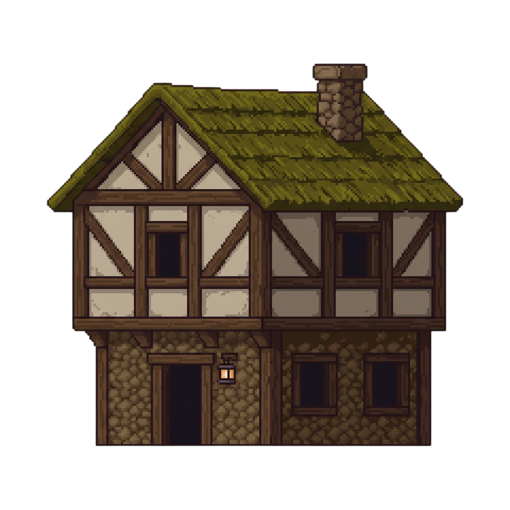

⚔️ Dawnholder — 정유현 작업 포트폴리오
📅 마일스톤 타임라인
M1 — Client Foundations 5/16 ~ 5/18 · 6/6 Phase 완료
| P | 내용 | 상태 |
|---|---|---|
| 01 | MainMenu 씬 + Hello UI — Unity 6.4 환경 검증, Build Profiles 등록 | DONE |
| 02 | 메인 메뉴 Start/Quit 버튼 + MainMenuController — 첫 상호작용 UI (4/4) | DONE |
| 03 | HUD 골격 — HP 슬라이더 + Gold + 미니맵 자리 + HudController 서버 데이터 진입점 API (4/4) | DONE |
| 04 | 일시정지 메뉴 — 새 InputSystem TogglePauseMenu 액션 + PauseMenuController (5/5) | DONE |
| 05 | 씬 전환 페이드 — SceneTransition Singleton + DontDestroyOnLoad + 비동기 로드 (7/7) | DONE |
| 06 | 회귀 6/6 + demo.mp4 박제 + M1 학습 일지 — 마일스톤 정식 마감 | DONE |
+ ad-hoc: ADR-021 — UI 전용 씬 분리 + Additive Load 패턴 제안·박제, CODEOWNERS 영역 분리 (아키텍처 결정 기여)
M2 — Client Visuals 5/16 ~ 5/18 · 6/8 완료 + 2 의도적 스킵
| P | 내용 | 상태 |
|---|---|---|
| 01 | Sprite Import 컨벤션 — 36 PNG 일괄 PPU 64/Point/Uncompressed, drift 5건 자동 fix | DONE |
| 02 | Idle 애니메이션 — 4 frame clip + Animator Controller 구성 | DONE |
| 03 | Run 애니메이션 + Idle↔Run 전환 — IsMoving 파라미터, AnimatorController API 자동화 | DONE |
| 04 | 캐릭터 이동 시각 wiring — PlayerAnimatorSync (이동→SetBool+flipX), spritesheet hard reset | DONE |
| 05 | 4-레이어 패럴랙스 배경 + Sorting Layer 체계 (Background/Default/Foreground/UI) | DONE |
| 06 | TMP 한글 폰트 — Pretendard SDF Atlas 2048² 자동 생성 + 프로젝트 Default 지정 | DONE |
| 07 | 메뉴/HUD 한글화 — 면담 임박, 시각 임팩트 대비 비용 커서 보류 판단 | SKIP |
| 08 | 회귀+데모 — Phase별 자연 검증으로 이미 충족, M3 데모에 흡수 판단 | SKIP |
M3 — First Multiplayer 합류 (Phase 08a) 5/19 · partial
멀티플레이어 마일스톤에 에셋·프리팹 담당으로 합류.
PlayerBase.prefab + Local/Remote variant 패턴 작업 — 영호의 Network/Input/State 작업과 완전 병렬로 진행하도록 의존성 0 설계 (5/18 핸드오프 합의).
RemotePlayer 비주얼 교체 시 RemoteEntity 컴포넌트 보존 약속 준수.
M4.3 — Art & Stage 6/5 · 머지 완료
| 작업 | 내용 |
|---|---|
| 타일맵 스테이지 | Town / HuntingGround / BossRoom 씬 타일맵 구성 + Town 건물 프리팹 (대장간·집) |
| 캐릭터 Status | HP / MP / EXP 슬라이더 + 캐릭터 아이콘 — 1_status_hud_frame 프레임 배치 |
| UI 패널 | 퀘스트 바 · 스킬 슬롯 ×5 · 다이얼로그 템플릿 · 미니맵 프레임 · 인벤토리 시작점 |
| 핸드오프 | 팀장 기능 구현용 시각화 문서 — 요소별 연결 상태 + 구현 가이드 (바로가기) |



🧠 학습 사건 하이라이트 (면접 결정타)
★★★ Rule of Six — "Unit correctness ≠ end-to-end"
M1 P04(worldPositionStays 음수 RectTransform) → M2 P01(36 PNG import drift) → P02(드래그 워크플로우 부산물) → P03(controller 잔재 재발) → P04(Auto Slice mesh 함정) → P05(URP Light Target Sorting Layers). 6개 사건이 전부 같은 패턴: 한 단위가 맞아도 끝까지 검증하지 않으면 어긋난다. 이후 모든 Phase에 "의도 vs 실제 결과 검증" 단계를 기본 탑재.
★★★ 데이터 기반 진단 — 1.5시간 손작업 vs 5분 자동화
M1 P04에서 MenuRoot RectTransform에 음수 sizeDelta(-1211, -681)가 박힌 사건. 손으로 1.5시간 헤매다 MCP dump 1회로 정확한 값이 잡혀 5분 만에 해결. 데이터 손상은 사용자 행동의 흔적이고, 추측보다 측정이 빠르다는 걸 체득.
★★★ Phase plan ≠ code reality — "기존 코드 read first"
M2 P04에서 옛 Phase 정의가 현재 코드 구조(이미 완성된 prediction layer)와 어긋남을 발견하고 Phase를 전면 재작성. 이후 마일스톤 분해 전 기존 코드부터 읽는 룰을 팀 프로세스에 반영.
★★ 아키텍처 기여 — ADR-021 (UI 씬 분리 + Additive Load)
UI를 전용 씬으로 분리하고 SceneBootstrap에서 Additive Load하는 패턴을 제안·박제.
CODEOWNERS 영역 분리와 함께 팀의 병렬 작업 충돌을 구조적으로 줄임.
🔧 만든 코드 (표시 전용 — 헌법 #1 Server Authority 준수)
| 스크립트 | 역할 |
|---|---|
Scripts/UI/MainMenuController.cs | 시작/종료 버튼 → 씬 로드 라우팅 |
Scripts/UI/HudController.cs | HP/Gold 표시 — 서버 패킷이 호출할 UpdateHP/UpdateGold API 설계 |
Scripts/UI/PauseMenuController.cs | ESC 토글 (InputActionReference) + Resume/MainMenu/Quit |
Scripts/UI/SceneTransition.cs | 페이드 Singleton — DontDestroyOnLoad + 비동기 씬 로드 + unscaledDeltaTime |
Scripts/Rendering/PlayerAnimatorSync.cs | 이동 델타 → Animator SetBool + flipX (30줄, 단일 책임) |